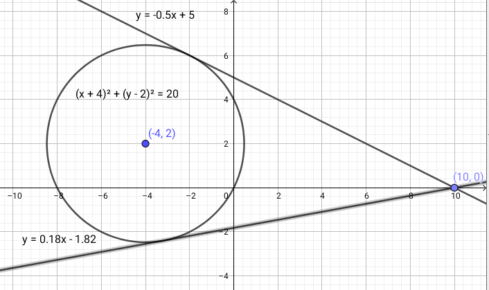

Was ist das für ein ding?
Brug af et koordinatsystem
Koordinatsystemet er kun i 2D
Geometriske størrelser
Beskrivelse af todimensionelle geometriske størrelser og figurer i et koordinatsystem.
Hvad er der af konkrete forskelle og ligheder mellem de andre gruppers metode og jeres egen?
Afstandsformlen
\[\lvert A B \rvert = \sqrt{\left( x_B - x_A \right)^2 + \left( y_B - y_A \right)^2}\]
Hvad er der af konkrete forskelle og ligheder mellem de andre gruppers metode og jeres egen?
Midtpunktsformlen \[M = \left( \frac{x_1 + x_2}{2}\,,\, \frac{y_1+y_2}{2} \right)\]
Produktet af hældningstallene for to ortogonale rette linjer giver -1
\[a_1 \cdot a_2=-1\]
Opgave 1
En linje går gennem punkterne \((1,1)\) og \((8,6)\), mens en anden linje går gennem punkterne \((10,-1)\) og \((-4,9)\).
Opgave 2
Et linjestykke er afgrænset af endepunkterne \(A(4,1)\) og \(B(-2,-3)\).
Hvis man går 1 til højre, hvor meget går man så op eller ned?
\[\boxed{a = \tan \left( v \right)}\]
Linjerne \(l\) og \(m\) er givet ved ligningerne
Linjerne er tydeligvis ikke ortogonale.
I har et punkt \(P(4,2)\) og en linje \(l: y=-2x+1\)
Hvad er afstanden?
For punktet \(P(x_1, y_1)\) og linjen \(m: ax + by +c = 0\) er afstanden mellem \(P\) og \(m\) givet ved
\[\boxed{dist(P, m) = \frac{\lvert a\cdot x_1+b\cdot y_1+c \rvert}{\sqrt{a^2+b^2}}}\]
Normalvektoreren til linjen \(m\) er givet ved \(\vec{n} = \begin{pmatrix} a \\ b \end{pmatrix}\).
Opgave 1
I har givet to parallelle linjer:
Opgave 2
I har givet en linje \(k: -2x+4y-8 = 0\)
Cirklens ligning \[(x-a)^2+ (y-b)^2 = r^2\]
Opgave 1:
Undersøg om følgende ligninger fremstiller cirkler. Angiv om muligt centrum og radius.
Opgave 2:
En ligning, der fremstiller en cirkel, har følgende udseende:
\[(x+3)^2 + (y+1)^2 = 16\]
Opgave 3: Der er givet tre punkter i et koordinatsystem \((0,0)\), \((4,2)\) og \((6,0)\)
Kan denne cirkel skrives som en funktion? \[(x+2)^2+(y-3)^2 = 4^2\]
NOPE!
Kan den så skrives som to funktioner?
Prøv jer frem i jeres makkerskabsgrupper
\[(x+2)^2+(y-3)^2 = 4^2\]
TRYLLE, TRYLLE, TRYLLE
"Overbollen" \[f_1(x)=3+\sqrt{4^2-(x+2)^2}\]
"Underbollen" \[f_1(x)=3-\sqrt{4^2-(x+2)^2}\]
Alles zusammen
Vi har en cirkel, \((x+4)^2 + (y-2)^2 = 20\) og et punkt\((10,0)\).
Lad os finde tangenterne til cirklen, som går gennem \((10,0)\).

Hvordan skal vi gøre det uden geogebra?
Find først hældningen for tangenten.
Find nu tangenternes skæringer med y-aksen vha \[b = y_1 - a \cdot x_1\]
og opskriv tangenternes ligninger
\[y=-0.5 x + 5 \quad \text{og} \quad y=0.18 x - 1.82\]
Opgave 1
En cirkel har ligningen \((x-4)^2+(y-1)^2=2^2\)
Opgave 2
En ret linje \(m\) er givet ved ligningen:
\[m: 3x -4y + 8 = 0\]
Vi har cirklen \((x-1)^2+(y-4)^2 = 50\) og den rette linje \(y=2x+7\)
Hvordan var det nu lige med de 2.gradsligninger?
\[a x^2 + b x + c = 0\]
\[d = b^2-4 a c\]
\[x = \frac{-b \pm \sqrt{d}}{2 a}\]
\((x-1)^2+(y-4)^2 = 50\) og \(y=2x+7\)
\[(x-1)^2 + (2x+7 -4)^2 = 50\]
\[x^2 + 1 - 2x + 4x^2 + 3^2 + 12x - 50 = 0\]
\[5x^{2} + 10 x -40 = 0\]
\[d = 10^2 - 4\cdot 5 \cdot (-40) = 900\]
\[x = \frac{-10 \pm \sqrt{900}}{2\cdot 5} \to x_1=2 \text{ og } x_2=-4\]
\[y_1 = 2\cdot 2 +7 = 11 \text{ og } y_2 = 2 \cdot (-4) + 7 = -1\]
Ergo er skæringspunkterne \((2,11)\) og \((-4, -1)\).
Hvordan findes skæringspunkterne mellem disse cirkler?
Ophæv alle parenteser og sæt alle led på en side i hver ligning
Sæt ligningerne lig hinanden (eller træk de to ligninger fra hinanden), og få
\[-2x - 4y +12 = 0\]
\[\boxed{y= - \frac{1}{2}x +3}\]